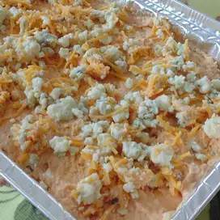

Buffalo Chicken Dip

Description
Buffalo chicken dip is one of the many easy crockpot snacks you can make
for your friends and family on gameday. With minimal ingredients, your
guests will be coming back for seconds with this delicious recipe!
Ingredients
- 1 (15oz) jar chunky-style blue cheese salad dressing
- 1 (8oz) package cream cheese, softened
- 3 cooked chicken breasts, shredded
- 1 (12oz) bottle Buffalo wings sauce (such as Frank's Redhot)
- 1 (4oz) package blue cheese crumbles
Directions
- Preheat the oven to 350 degrees F (175 degrees C).
-
Stir together blue cheese salad dressing and cream cheese in a mixing
bowl until smooth. Stir in chicken, Buffalo wing sauce, and blue cheese
crumbles; pour chicken mixture into a baking dish.
- Bake in the preheated oven until bubbling, 15 to 20 minutes.